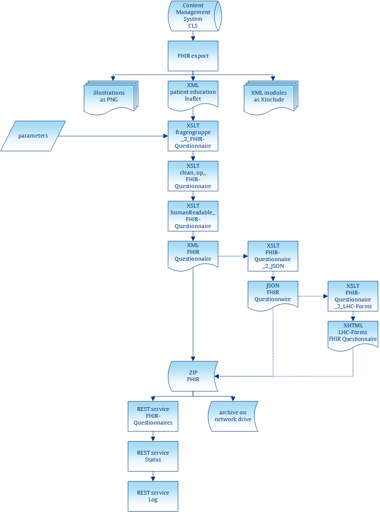

This second batch is used to deliver the medical history part of the patient education leaflet additionally as an HL7 FHIR questionnaire resource. Therefore, the main XML file as well as all referenced XIncludes are exported from the database into a temporary folder on the CLS server. A three-step transformation is then performed to:
Merge the main XML with the XIncludes
Generate the FHIR questionnaire resource and then clean it up (e.g. whitespace handling)
Derive the human-readable part from the previously generated FHIR questionnaire resource and merge it back in
Optionally transform the previously generated XML FHIR questionnaire resource into JSON
Further optionally merge the just generated JSON FHIR questionnaire resource into an XHTML template for an output based on LHC-Forms
Afterwards, the generated results are zipped and delivered via REST services using curl. The images are not needed for this output and are therefore discarded.
Figure 4. Batch “fragengruppe_2_FHIR-Questionnaire”
|  |